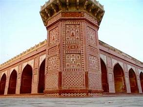
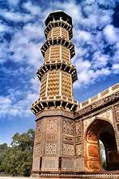
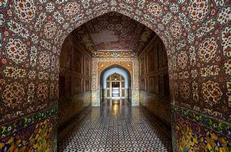

Tomb of Jahangir
The resting place of Emperor Jahangir in Lahore.
The resting place of Emperor Jahangir in Lahore.
The Tomb of Jahangir is located in Shahdara, Lahore, on the banks of the Ravi River. It was built in 1637 by Emperor Shah Jahan in memory of his father, Jahangir, who ruled the Mughal Empire from 1605 to 1627. The tomb is surrounded by beautiful Mughal gardens laid out in the Charbagh style and is one of the finest examples of early Mughal funerary architecture. Uniquely, the tomb does not have a central dome, as Jahangir wished to be buried under the open sky.
The Tomb of Jahangir is rectangular in shape and built primarily with red sandstone, decorated with marble inlay and floral designs.
Four slender minarets, each about 100 feet high, stand at the corners of the platform. They are decorated with marble and provide a striking elegance to the building.
Inside, the cenotaph of Jahangir is made of white marble and beautifully inlaid with floral pietra dura work and Quranic inscriptions.
